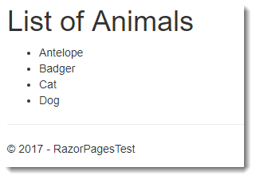

部分页或视图是 Razor 文件，其中包含要包含在任意数量的页面或布局中的 HTML 片段和服务器端代码。 部分页可用于将复杂页面分解为更小的单元，从而降低复杂性并允许团队同时处理不同的单元。
创建部分页
部分页是不参与路由的 cshtml 文件。 因此，您可以使用任何 Razor 模板来生成部分页面，但导致创建 PageModel 文件的 Razor 页面模板除外。
部分页呈现
部分页以多种方式包含在调用页面中。 从 ASP.NET Core 2.1 开始，推荐的包含部分页的机制是 部分页标签助手:
<partial name="_MenuPartial" />name 属性采用不带文件扩展名的部分文件的名称，或部分路径。 您提供的 name 属性值不区分大小写。 部分标签助手异步呈现部分内容，从而提高应用程序性能。
在 ASP.NET Core 2.1 之前，您可以使用具有 Partial() 方法的页面的 Html 属性：
@Html.Partial("_MenuPartial")
Html 属性还提供了 3 种其他方法来呈现部分页面的内容：PartialAsync、RenderPartial 和 RenderPartialAsync。
以 Async 结尾的两种方法都用于呈现包含异步代码的部分，尽管呈现依赖于异步处理的独立 UI 单元的首选方法是使用 ViewComponents。
名称中带有 Render 的两个方法都返回 void 而另外两个方法返回一个 IHtmlString（原始 HTML）。 因此，Render 方法必须在代码块中作为语句调用：
@{ Html.RenderPartial("_MenuPartial"); }
Render 方法导致其输出直接写入响应，因此在某些情况下可能会提高性能。
但是，在大多数情况下，这些改进不太可能是显着的，因此建议使用 Partial 和 PartialAsync 方法，因为您应该努力尽量减少 Razor 页面中的代码块。
调用任何渲染方法都不会导致执行 Viewstart 文件。
命名和定位部分页
无论您使用标签助手还是 Html.Partial 或 Html.RenderPartial 方法，您都不必传入部分页的路径。
框架会通过从调用页面的位置沿着文件目录向上查找您传入的文件名进行搜索，只要您不包含文件扩展名，直到它到达 Pages 根文件夹 。一旦搜索完，就会搜索正式注册的位置。
默认注册的搜索路径是 Pages/Shared（从 ASP.NET Core 2.1 开始）和 Views/Shared（MVC 应用程序中部分视图的默认位置）。
如果调用页面位于 Pages/Orders 中，搜索部分名称 _Foo.cshtml 将包括以下位置：
- Pages/Orders/_Foo.cshtml
- Pages/_Foo.cshtml
- Pages/Shared/_Foo.cshtml
- Views/Shared/_Foo.cshtml
如果调用部分的页面位于区域，搜索也会在当前执行页面的文件夹中开始， 然后 沿着该区域内的目录的上级目录。 一旦区域文件夹结构搜索完，将搜索注册的部分位置相对于区域文件夹位置 （即Pages/Shared和Views/Shared 区内）。最后，搜索注册位置本身。
以下搜索位置假设调用页面位于 Areas/Orders/Pages/Archive/Index.cshtml：
- Areas/Orders/Pages/Archive/_Foo.cshtml
- Areas/Orders/Pages/_Foo.cshtml
- Areas/Orders/Pages/Shared/_Foo.cshtml
- Areas/Orders/Views/Shared/_Foo.cshtml
- Pages/Shared/_Foo.cshtml
- Views/Shared/_Foo.cshtml
如果您提供带有文件扩展名的文件名，则框架假定您传入的是一个以包含正在执行的当前页面的文件夹中根目录的相对路径。
可以将其他位置添加到默认注册的搜索路径 (Pages/Shared and Views/Shared) 在 StartUp 的 ConfigureServices
方法中使用 Razor 视图引擎选项。
以下代码块将 Pages/Partials 文件夹添加到搜索路径，这意味着您可以将部分文件放在那里并找到它们：
public void ConfigureServices(IServiceCollection services)
{
services.Configure<RazorViewEngineOptions>(options =>
{
options.PageViewLocationFormats.Add("/Pages/Partials/{0}" + RazorViewEngine.ViewExtension);
});
}
新位置将添加到搜索位置列表的末尾。
部分文件没有任何特殊的命名要求。默认站点模板包括名为 _ValidationScriptsPartial.cshtml 和 _CookieConsentPartial.cshtml 的部分。文件名中的前导下划线是一种约定。然而，下划线不是必需的。
强类型部分页
就像标准 Razor 页面一样，部分页支持 @model 指令，指定部分数据模型的类型。所有渲染方法都有重载版本，这些版本需要在部分中使用模型。
以下示例包含一个名为 PartialDemo.cshtml 的标准 Razor 页面及其 PageModel 文件内容（首先显示）。
PageModel 类包含一个名为 Animals 的属性，其类型为 List<string>，它将作为模型从 PartialDemo 内容页面传递给部分页：
PartialDemo.cshtml.cs
using System;
using System.Collections.Generic;
using System.Linq;
using System.Threading.Tasks;
using Microsoft.AspNetCore.Mvc;
using Microsoft.AspNetCore.Mvc.RazorPages;
namespace RazorPagesTest.Pages
{
public class PartialDemoModel : PageModel
{
public List<string> Animals = new List<string>();
public void OnGet()
{
Animals.AddRange(new[] { "Antelope", "Badger", "Cat", "Dog" });
}
}
}
这是内容页面 PartialDemo.cshtml，其中包含一个部分标签助手，将 Animals 属性传递给 Partial1.cshtml 作为其模型：
@page
@model PartialDemoModel
@{
}
<partial name="_Partial1" model="Model.Animals" />
最后是部分内容，名为 _Partial1.cshtml 并带有 @model 声明：
@model List<string>
<h1>List of Animals</h1>
<ul>
@foreach (var item in Model)
{
<li>@item</li>
}
</ul>
PageModel 包含一个名为 Animals 的属性，它是一个字符串列表。 它填充在 OnGet 处理程序中，然后传递到标签助手中的部分页。
部分有一个 @model 指令，指定页面的模型应该是一个字符串列表。 内容被迭代并呈现为一个无序列表：

请注意，部分页面不具有 @page 指令。 这将使文件成为一个完整的 Razor 页面，并导致与模型相关的 NullReferenceException 在框架尝试调用它时未声明 - 因为没有关联的 PageModel 文件。